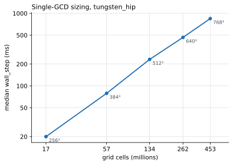
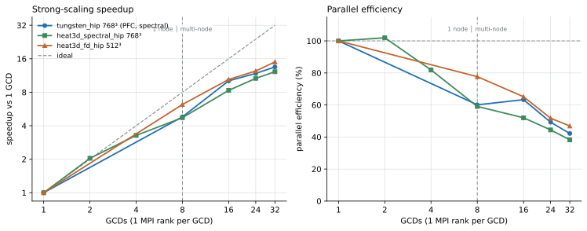

16 Scalability
Three applications have been strong-scaled on LUMI-G from one GCD to 32 GCDs across four nodes. This chapter reports those curves, what limits them, and where they stop being worth extending.
16.1 Method
All measurements are on LUMI-G, one MPI rank per GCD, double precision, I/O disabled, from the standard-g and dev-g partitions. The reported quantity is the median wall_step over accepted steps after a warm-up frame — the first frames include FFT planning and first-touch allocation and are not representative.
For a baseline of \(p_0 = 1\) GCD,
\[ S(p) \;=\; \frac{t(1)}{t(p)}, \qquad E(p) \;=\; \frac{S(p)}{p}. \tag{16.1}\]
Strong scaling means the global problem size is fixed while \(p\) grows, so the work per rank shrinks and the communication-to-computation ratio rises. Every curve here must therefore fall away from ideal eventually; the useful question is where, and why.
Raw data is committed under data/ and the figures are regenerated from it by figures/make_figures.py.
16.2 Choosing the working point
A strong-scaling curve is only meaningful if the single-rank baseline is genuinely compute-bound. Too small a grid and the baseline is dominated by launch overhead, which flatters every subsequent point.

tungsten_hip. The near-linear slope on log–log axes shows cost tracking cell count, so \(768^3\) is a defensible compute-bound baseline.
| \(L_x\) | Cells | Job | Median wall_step |
|---|---|---|---|
| 256 | 16.8 M | 21759671 | 20 ms |
| 384 | 56.6 M | 21759672 | 79 ms |
| 512 | 134 M | 21759709 | 232 ms |
| 640 | 262 M | 21759710 | 466 ms |
| 768 | 453 M | 21759720 | 847 ms |
\(768^3\) was chosen as the strong-scaling grid: it is comfortably compute-bound at one GCD and still fits in device memory.
16.3 Strong-scaling results

16.3.1 Tungsten PFC, \(768^3\)
Spectral ETD, the model of Chapter 3.
| GCDs | Nodes | Job | wall_step |
Speedup | Efficiency |
|---|---|---|---|---|---|
| 1 | 1 | 21761281 | 851 ms | 1.00 | 100% |
| 8 | 1 | 21764313 | 177 ms | 4.81 | 60% |
| 16 | 2 | 21764315 | 84 ms | 10.2 | 64% |
| 24 | 3 | 21764316 | 72 ms | 11.9 | 50% |
| 32 | 4 | 21764317 | 63 ms | 13.6 | 42% |
SPECTRAL_CHECKSUM at 1 and 16 GCDs agrees to about \(10^{-12}\) relative, so the speedup is not being bought with a changed answer.
The efficiency rises from 8 to 16 GCDs (60% → 64%). That is not noise and not a scaling anomaly: it is a decomposition effect. Going to two nodes changes the pencil/slab layout the transform uses, and the two-node layout happens to suit this grid better than the eight-rank single-node one. It is a reminder that FFT scaling on a fixed grid is sensitive to how the decomposition divides the axes, not only to rank count.
16.3.2 Heat3D spectral HIP, \(768^3\)
Implicit Euler in Fourier space, two transforms per step — the spectral driver of Chapter 12.
| GCDs | Nodes | Job | wall_step |
Speedup | Efficiency |
|---|---|---|---|---|---|
| 1 | 1 | 21773962 | 416 ms | 1.00 | 100% |
| 2 | 1 | 21774367 | 204 ms | 2.04 | 102% |
| 4 | 1 | 21774368 | 127 ms | 3.29 | 82% |
| 8 | 1 | 21774369 | 88 ms | 4.74 | 59% |
| 16 | 2 | 21773966 | 50 ms | 8.34 | 52% |
| 24 | 3 | 21773967 | 39 ms | 10.6 | 44% |
| 32 | 4 | 21773968 | 34 ms | 12.2 | 38% |
The 102% at two GCDs is superlinear and should be read as a cache/occupancy effect at the boundary of measurement precision, not as a real gain.
Checksums at 1 and 16 GCDs agree to about \(3\times10^{-16}\).
16.3.3 Heat3D finite difference HIP, \(512^3\)
Device halo exchange plus stencil, second order — the FD driver of Chapter 12, on the same PDE as the spectral driver above.
| GCDs | Nodes | Job | wall_step |
Speedup | Efficiency |
|---|---|---|---|---|---|
| 1 | 1 | 21761036 | 5.91 ms | 1.00 | 100% |
| 8 | 1 | 21761037 | 0.951 ms | 6.22 | 78% |
| 16 | 2 | 21761038 | 0.567 ms | 10.4 | 65% |
| 24 | 3 | 21761039 | 0.476 ms | 12.4 | 52% |
| 32 | 4 | 21761042 | 0.394 ms | 15.0 | 47% |
Checksums at 1 and 16 GCDs agree to about \(5\times10^{-15}\).
16.4 Reading the comparison
The finite-difference curve is the best of the three at every rank count — 78% efficiency at one node against 59% for the spectral driver, and 47% against 38% at 32 GCDs. The reason is structural rather than incidental.
A finite-difference step communicates only with nearest neighbours: each rank exchanges a face with each neighbour, and the volume of that exchange falls as the subdomain shrinks. A distributed FFT communicates all-to-all: the transpose between decomposition axes moves data between every pair of ranks. As \(p\) grows, nearest-neighbour traffic stays local while all-to-all traffic grows, and the transpose comes to dominate the step.
The two Heat3D drivers solve the same equation on the same machine, so comparing their scaling behaviour is legitimate, and the conclusion is that halo exchange strong-scales better than a distributed transpose.
It does not follow that finite differences are the better choice. The two runs are at different grid sizes (\(512^3\) against \(768^3\)) and, more importantly, the methods do not offer the same thing per step. The FD driver is explicit and bound by Equation 2.4; the spectral driver is unconditionally stable and can take a far larger timestep. Time-to-solution is the product of cost per step and number of steps, and this chapter measures only the first factor.
Nor does it license comparing either Heat3D driver against tungsten_hip: that is a different PDE with a different operator and a different amount of work per step.
16.5 Where the curves stop being useful
All three fall below 50% efficiency by 24–32 GCDs. At \(768^3\) on 32 GCDs each rank holds roughly \(14\) million cells, and for the spectral models the transpose has become a substantial share of the step.
The practical readings are:
- Up to one node (8 GCDs) every model is worth the resources.
- Two to four nodes remain worthwhile for the largest grids, especially for the FD path.
- Beyond that, at these grid sizes, further ranks buy progressively less. Extending the curve is better spent on a larger grid — weak scaling — than on more ranks at fixed size.
16.6 Coverage and gaps
| Application | Scaling measured |
|---|---|
| Chapter 3 | Yes — 1–32 GCDs, \(768^3\) |
| Chapter 12 (spectral HIP) | Yes — 1–32 GCDs, \(768^3\) |
| Chapter 12 (FD HIP) | Yes — 1–32 GCDs, \(512^3\) |
| Chapter 4 | No |
| Chapter 5, Chapter 6, Chapter 7, Chapter 8, Chapter 9 | No |
| Chapter 10 | No — CPU/GPU agreement checked at 1 and 2 GCDs only |
| Chapter 11 | No — not a time-stepping problem |
| Chapter 13, Chapter 14, Chapter 15 | No |
The unmeasured spectral applications share the ETD stack with Chapter 3 and would be expected to behave similarly at equal grid size, but that expectation has not been tested and no curve is claimed for them.
Two gaps are worth naming explicitly. There is no LUMI-C CPU control, so the report cannot say what the GPU path buys over CPU at equal node count. And there is no weak-scaling study: every curve here holds the problem fixed, which is the harder test but not the one that matters for running a bigger simulation.